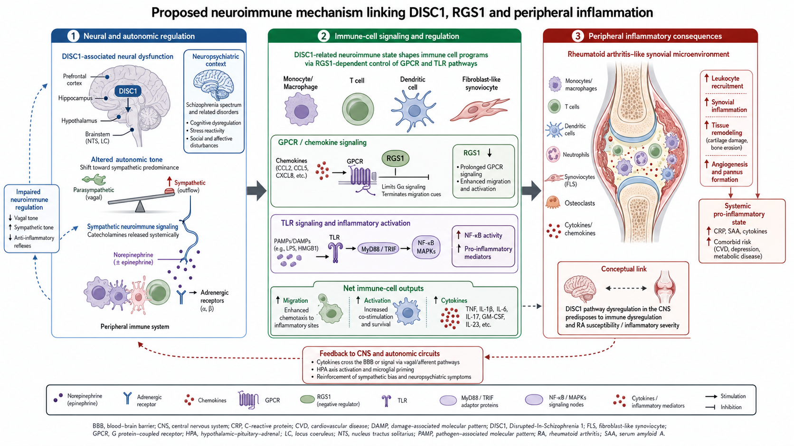

Forschungsfeld III · Neuroimmunologie
Assays from scratch in einem neuen Labor
Als wissenschaftlicher Mitarbeiter habe ich molekulare Mechanismen neuroimmunologischer Interaktionen untersucht — in Tiermodell und Patientenmaterial, an der Schnittstelle von Schizophrenie und rheumatoider Arthritis. Der Schwerpunkt lag auf dem Aufbau und der Validierung von qPCR- und FACS-Assays in einer neuen, cross-institutionellen Laborumgebung: Protokolle from scratch.

Der wissenschaftliche Hintergrund
Nerven- und Immunsystem sind kein getrenntes Nebeneinander. Sie kommunizieren über gemeinsame Signalwege — und Störungen dieser Kommunikation tauchen in ganz unterschiedlichen Krankheitsbildern auf. Das Projekt fragte, ob sich molekulare Mechanismen, die man aus der Schizophrenie-Forschung kennt, mit Signalwegen der rheumatoiden Arthritis in Verbindung bringen lassen.
Im Zentrum standen GPCR-Signale (G-Protein-gekoppelte Rezeptoren) und ihre Regulatoren — insbesondere RGS1 — sowie Chemokin- und adrenerge Signalwege und ihr Einfluss auf die Funktion von Immunzellen. Als Modell diente das tgDISC1-Rattenmodell: DISC1 („Disrupted in Schizophrenia 1") ist ein Gen, das mit psychiatrischen Erkrankungen assoziiert ist. Der Vergleich von transgenem Tiermaterial mit humanen Proben sollte zeigen, ob dieselben neuroimmunologischen Signaturen auf beiden Seiten auftreten.
Die eigentliche Herausforderung: ein Labor ohne diese Methoden
Das Besondere — und Schwierige — an dieser Stelle war die Aufstellung. Die Rattenmodelle wurden erstmals im Rheumatologie-Labor etabliert, das auf diese Art von Analysen nicht eingerichtet war. Es gab keine fertigen Protokolle, auf die man aufsetzen konnte. PCR- und FACS-Methoden mussten from scratch aufgebaut werden.
Was ich dort gemacht habe
- qPCR aus Rattenmilz-RNA aufgebaut — inklusive Optimierung der RNA-Isolation, Primerprüfung über Agarosegele und Fehlersuche bei Primer-Dimeren.
- Intrazelluläre FACS-Assays entwickelt — für RGS1 und CCL4 in humanen und tierischen Proben, mit dokumentiertem Troubleshooting: Fluorophor-Konjugation und der Verlust von Oberflächenmarkern in PBMC-Ansätzen.
- Protokolle und SOPs etabliert — drei Protokolle (FACS, PCR, Immunohistologie/Probengewinnung) inklusive Analysevorlagen, dazu die Einarbeitung von Laborpersonal an den Geräten.
- Cross-institutionell gearbeitet — aktiver Wissenstransfer zwischen den Gruppen, u. a. die Verhaltensanalyse der Ratten im Psychologie-Labor beobachtet und die biologische Analyse darauf abgestimmt.
Dazu kamen Beiträge zu Genotypisierung, einem IHC-nahen Projektstrang, Progress Reports und der experimentellen Planung — sowie Literaturrecherche, Budgetplanung und Präsentationen für die projektübergreifende Abstimmung.
Schlüsselmethoden
- Molekularbiologie: qPCR, RNA-Isolation, Primerdesign und -validierung, Agarosegele.
- Durchflusszytometrie: FACS / Flow Cytometry (CytExpert, FlowJo), intrazelluläres Staining, Antikörper-Panel-Optimierung.
- Histologie & Genetik: Immunohistologie, Genotypisierung, Organdissektion (Ratte).
- Wissenschaftliche Praxis: Protokollentwicklung from scratch, SOP-Erstellung, Progress Reports, Einarbeitung von Personal.
Was ich daraus mitnehme
Dieses Feld steht für das, was übrig bleibt, wenn keine Vorlage existiert: Methoden neu aufbauen, Fehlerquellen systematisch ausschließen und den Ablauf so festhalten, dass er reproduzierbar wird. Etwas von Grund auf entwerfen, sauber dokumentieren und übergabefähig machen — das begegnet mir in anderer Form auch in meinen heutigen Automationen.